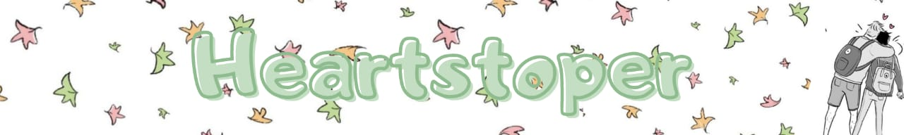
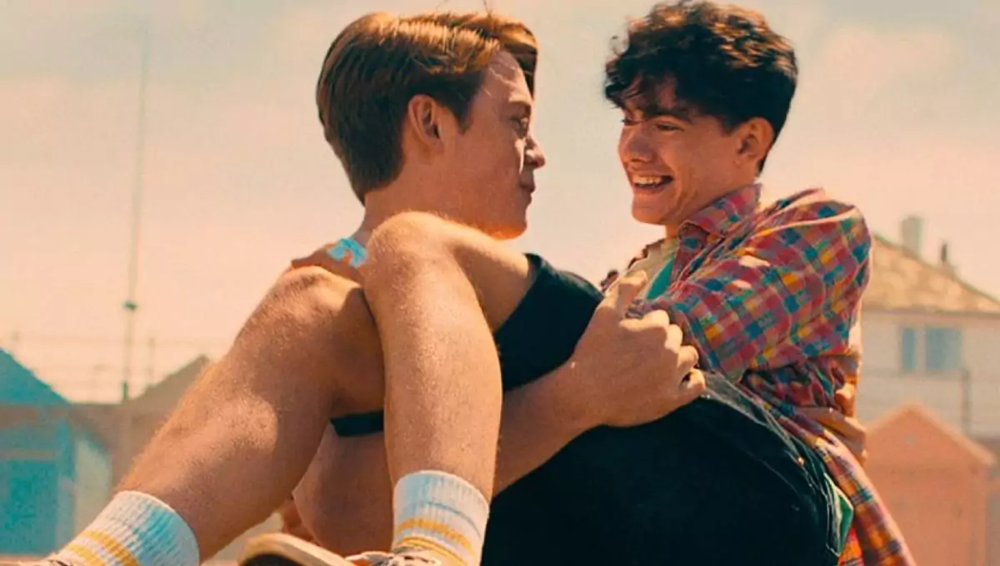

hee
Baseada na graphic novel homônima de Alice Oseman, Heartstopper é a novo sucesso romântico da Netflix. O enredo da série, dirigida por Euros Lyn, se passa principalmente em duas escolas de ensino médio, divididas por sexo, e tem foco no desenvolvimento do relacionamento entre Nick Nelson (Kit Connor) e Charlie Spring (Joe Locke), além dos conflitos emocionais de seus amigos e suas jornadas de amadurecimento.
Se você já assistiu a alguns filmes de romance, irá perceber diversos clichês ao longo da trama da série: jovem que se esconde durante o recreio na sala de aula com um professor para escapar do bullying, personagem excluído da cadeia social que se apaixona pelo esportista popular do colégio, amigo do protagonista que se sente deixado de lado por conta do romance, você escolhe. Porém, Hearthstopper utiliza esses clichês para criar originalidade.
Charlie, protagonista da série, é o único garoto publicamente homossexual em sua escola, mas isso não aconteceu por sua vontade, no ano anterior, o personagem foi tirado à força do armário por seus colegas e até os eventos da série ainda sofre homofobia. Apesar disso, ele possui um grupo fiel e protetor de amigos, Tao (William Gao ), Elle (Yasmin Finney) e o silencioso Issac (Tobie Donovan). Ao se perceber apaixonado por Nick, estrela do time de rúgbi da escola, Charlie realmente age de acordo com seus sentimentos e começa a dar em cima de Nick, claro, reescrevendo a mesma mensagem dez vezes antes de enviar, mas quem nunca?

No outro lado das mensagens, Nick se vê desenvolvendo sentimentos por Charlie e por conta disso começa a questionar sua sexualidade. Ao contrário da maioria das histórias que abordam a descoberta da sexualidade na adolescência, a série não faz grande estardalhaço com esse tópico, Nick aceita que gosta de garotos e após alguma introspecção admite para si mesmo que é bissexual e começa a namorar Charlie. A questão é que, em Heartstopper, o conflito dos personagens não é, pelo menos não por muito tempo, suas sexualidades ou seus relacionamentos e sim os desafios que se encontra ao expressar seu verdadeiro eu para o mundo, um foco narrativo que é uma lufada de ar fresco para espectadores de longa data de filmes românticos.
Outros exemplos desse tema trabalhados ao longo da série são o casal lésbico Tara (Corinna Brown) e Darcy (Kizzy Edgell), personagens que sabem que se amam e o conflito então é lidar com como os outros reagem ao seu relacionamento e os julgamentos subsequentes. Elle ser uma mulher trans não é um tema altamente explorado na trama, apenas um fato entregue no início do primeiro episódio e tratado com naturalidade pelos personagens, ter uma paixonite por seu melhor amigo, mas hesitar se confessar por medo de perder a amizade, é sua verdadeira questão.
Apesar das atuações não serem muito expressivas, o que tira o peso de algumas cenas, Heartstopper se sustenta com interações entre personagens que cativam por sua estranheza e humor, um enredo de dar quentinho no coração, uma boa trilha sonora pop e uma fotografia acolhedora e jovial.
Até o momento de publicação da reportagem não foram divulgadas informações pela Netflix sobre uma renovação da série para uma segunda temporada.